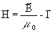
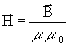
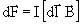
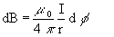
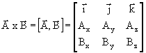
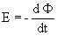
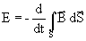
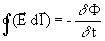
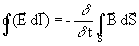

Законы и уравнения магнитного поля
Множители и приставки для десятичных величин
|
Приставка |
Множитель |
Обозначение |
|
|
Русское |
Международное |
||
| экса | 1018 | Э | E |
| пета | 1015 | П | P |
| тера | 1012 | Т | T |
| гига | 109 | Г | G |
| мега | 106 | М | M |
| кило | 103 | к | k |
| гекто | 102 | г | h |
| дека | 101 | да | da |
| деци | 10-1 | д | d |
| санти | 10-2 | с | c |
| милли | 10-3 | м | m |
| микро | 10-6 | мк | m |
| нано | 10-9 | н | n |
| пико | 10-12 | п | p |
| фемто | 10-15 | ф | f |
| атто | 10-18 | а | a |
Приставки гекто-, дека-, деци- и санти- используются только в исторически сложившихся наименованиях (например, гектар, декалитр, дециметр, сантиметр).
Единицы измерения магнитных величин
| Система единиц Наименование |
СГС | СИ | Соотношение |
| Магнитная индукция | Гс | Тл | 1 Гс = 10-4 Тл |
| Напряженность магнитного поля | Э | А/м | 1 Э = 103/(4p) А/м ≈ 79.5775 А/м |
| Магнитный поток | Мкс | Вб | 1 Мкс = 10-8 Вб |
| Магнитный момент | emu | А ∙ м2 | 1 emu = 10-3 А ∙ м2 |
| Намагниченность | emu/см3 | А/м | 1 emu/см3 = 103 А/м |
Гс - Гаусс, Тл - Тесла, Э - Эрстед, А/м - Ампер на метр, Мкс - Максвелл, Вб - Вебер
Внесистемная единица напряженности магнитного поля: 1 гамма = 1 g = 10-5 Э ↔ 10-9 Тл = 1 нТл
Принцип суперпозиции
Магнитное поле, создаваемое несколькими движущимися зарядами или токами, равно векторной сумме магнитных полей, создаваемых каждым зарядом или током в отдельности.
Однородное магнитное поле
Однородное магнитное поле - магнитное поле, в каждой точке которого вектор магнитной индукции имеет одни и те же направление и величину.
Связь между напряженностью магнитного поля, индукцией и намагниченностью
В вакууме:

где H – напряженность магнитного поля, B – индукция магнитного поля, m0 = 4p ∙ 10-7 В ∙ сек/А ∙ м = 4p ∙ 10-7 Гн/м – магнитная постоянная.
В среде:

где I – вектор интенсивности намагничения среды (намагниченность) – векторная сумма магнитных моментов, находящихся в единице объема.
В изотропной среде:

где m – относительная магнитная проницаемость среды.
Закон Ампера
Сила Ампера – сила, действующая со стороны магнитного поля на проводник с током. Элементарная сила Ампера dF, действующая на малый элемент dl длины проводника, по которому идет электрический ток I, равна:

где dl – вектор, численно равный длине dl элемента проводника и направленный в ту же сторону, что и вектор j плотности тока в этом элементе проводника.
Если векторы dl и B взаимно перпендикулярны, то направление силы dF можно найти по правилу левой руки: если ладонь левой руки расположить так, чтобы вектор магнитной индукции входил в ладонь, а четыре вытянутых пальца указывали бы направление электрического тока, то отставленный большой палец укажет направление силы, действующей со стороны поля на проводник.
Закон Био – Савара – Лапласа
Закон Био – Савара – Лапласа устанавливает величину и направление вектора магнитной индукции dB в произвольной точке магнитного поля, создаваемого в вакууме элементом проводника длиной dl с током I:

где dl – вектор элемента проводника, численно равный dl и проведенный в направлении тока, r – радиус-вектор, проведенный из этого элемента проводника в рассматриваемую точку поля, r = mod(r).
Численно вектор dB равен:

где f – угол, под которым виден из рассматриваемой точки поля элемент dl проводника.
Векторное произведение в прямоугольной системе координат

где i, j, k – единичные векторы-орты, Ax, Ay, Az и Bx, By, Bz – составляющие векторов A и B вдоль осей координат x, y, z, соответственно.
Правило Максвелла (правило буравчика)
Правило Максвелла позволяет определить направление вектора индукции (или линий индукции) магнитного поля тока: если ввинчивать буравчик по направлению тока в проводнике, то направление движения рукоятки укажет направление вектора индукции (линий индукции).
Примеры магнитных полей токов
Магнитное поле бесконечного прямолинейного проводника с током I:
H = (1/4p) ∙ (2I/r)
B = (mm0/4p) ∙ (2I/r)
где r - расстояние от проводника до точки расчета.
Магнитное поле на оси кругового витка радиуса R с током I на расстоянии h от центра:
H = (1/2) ∙ (IR2) / (R2 + h2)3/2
B = (mm0/2) ∙ (IR2) / (R2 + h2)3/2
Магнитное поле в центре кругового витка радиуса R с током I:
H = I/(2R)
B = mm0 I/(2R)
Магнитное поле в центре прямоугольного витка (a и b - стороны прямоугольника) с током I:
H = (1/p ) ∙ 2I(a2 + b2)1/2 / (ab)
B = (mm0/p ) ∙ 2I(a2 + b2)1/2 / (ab)
Магнитное поле тороида с током I (тороид - кольцевая катушка индуктивности, намотанная на сердечник, имеющий форму тора) полностью локализовано внутри тороида:
H = NI / (2p r)
B = mm0NI / (2p r)
где N - число витков катушки, r - расстояние от центра тороида до точки внутри тороида.
Уравнения Максвелла
rot H = j + dD/d t
rot E = - dB/d t
div B = 0
div D = r
где H - напряженность магнитного поля, j - плотность электрического тока, D - электрическое смещение, E - напряженность электрического поля, B - магнитная индукция, r - плотность свободных электрических зарядов. Векторы D и E, B и H связаны между собой посредством тензоров электрической e (относительной электрической er) и магнитной m (относительной магнитной mr) проницаемостей:
D = eE = e0erE
B = mH = m0mrH
где e0 = 8.854 ∙ 10-12 Ф/м и m0 = 4p ∙ 10-7 Гн/м - электрическая и магнитная проницаемости вакуума (электрическая и магнитная постоянные).
Закон электромагнитной индукции Фарадея
Явление электромагнитной индукции состоит в том, что в проводящем контуре, находящемся в изменяющемся магнитном поле, возникает электродвижущая сила (э. д. с.) индукции. Если контур замкнут, то в нем возникает электрический ток, называемый индукционным током.
Закон электромагнитной индукции Фарадея: э. д. с. электромагнитной индукции (E) в контуре численно равна и противоположна по знаку скорости изменения магнитного потока (F) сквозь поверхность (S), ограниченную этим контуром:


Изменяющееся магнитное поле возбуждает вихревое электрическое поле. Циркуляция напряженности E этого поля вдоль замкнутого контура:


Ссылки:
21.10.2005
06.02.2007
11.02.2018
09.08.2022
13.11.2024
Альтернативные источники
энергии
Компьютеры и
Интернет
Магнитные поля
Механотронные системы
Перспективные
разработки
Электроника и
технология